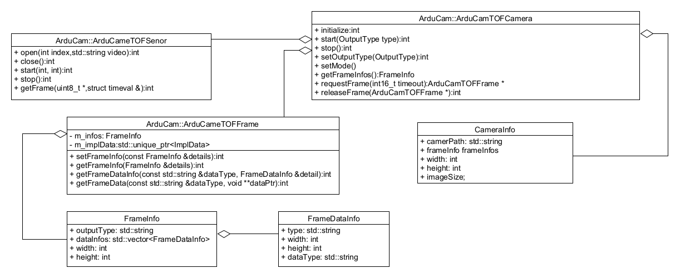

Introduction
ArduCam TOF SDK is a dynamic link library written in C++,There are three classes, Camera, Frame, and Sensor. Camera is responsible for managing camera image acquisition calculation, Frame is responsible for memory management of camera data storage, and Sensor is the specific implementation of calling camera. It is called as a member object in the Camera class, and users generally do not touch it. Specifically as shown in the figure below:
Mode introduction
We provide two modes, 2m range mode and 4m range mode, the difference between the modes is that the modulation frequency of light in 2m range mode is 75MHZ and the 4m range mode is 37.5MHZ. Because of the different modulation frequencies, the data measured in the 2-meter range mode is more accurate, but phase winding is more likely to occur because of the short range. The 4-meter range is less accurate than the 2-meter range, but the phase can be effectively avoided. winding.
